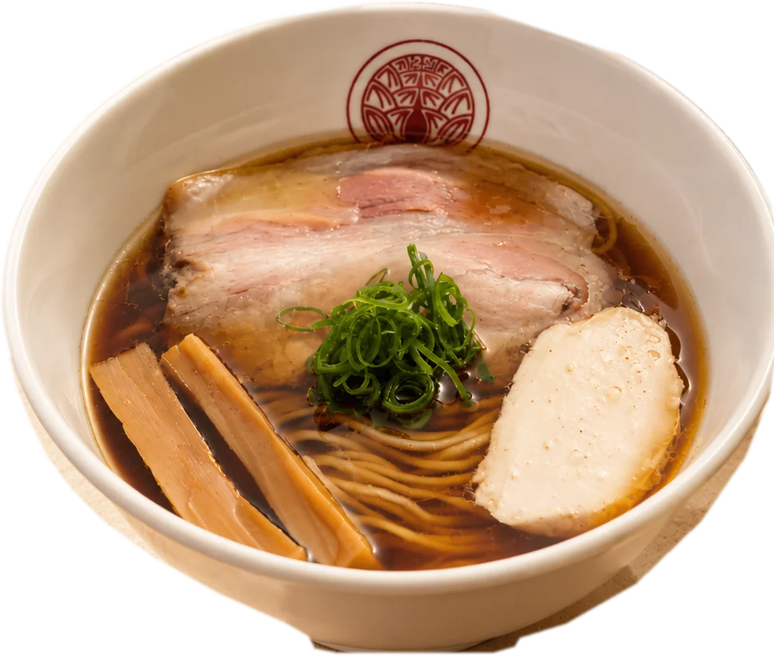
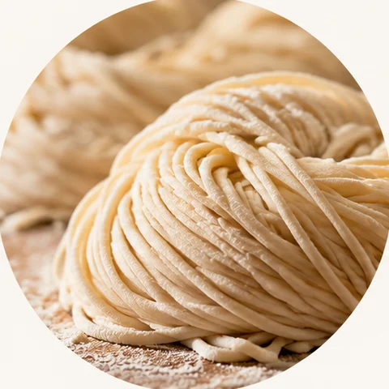
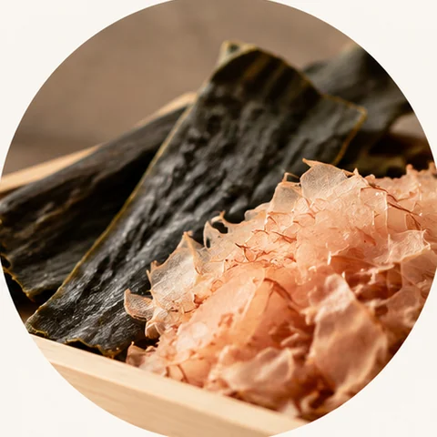
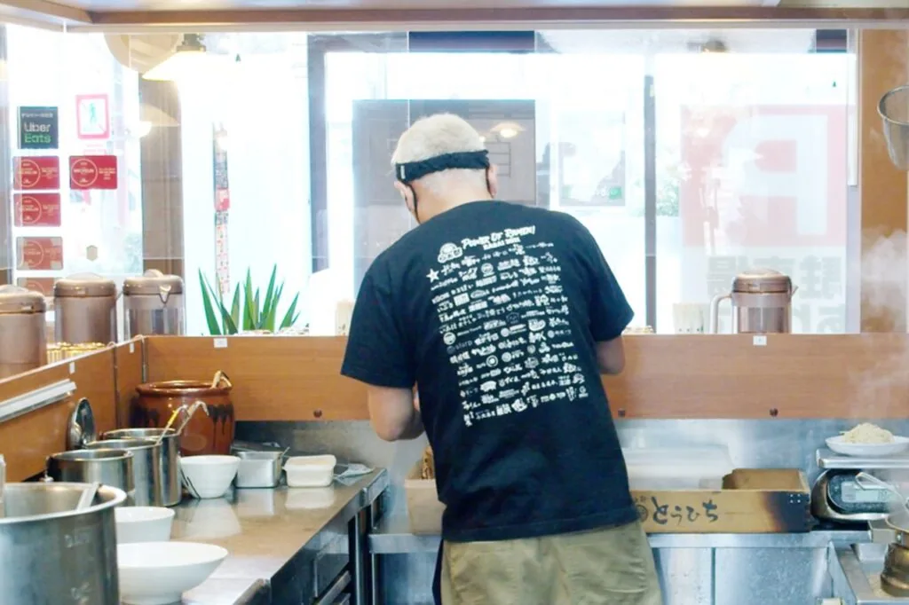
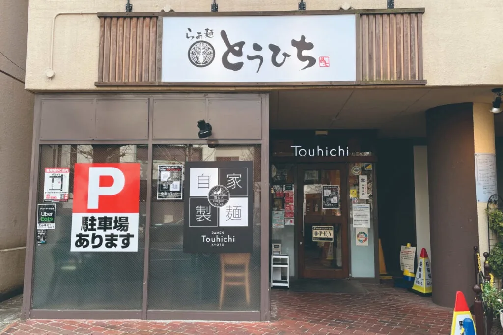

日常に、
少し特別な一杯。
A special bowl
for every day.

京都・修学院で、
澄んだ淡麗スープのらぁ麺を。
In Shugakuin, Kyoto —
ramen with a light, clear broth.
- ミシュラン掲載Michelin Listed
- 京都・修学院Kyoto · Shugakuin
- 淡麗鶏清湯Light Chicken Broth
The
Ingredients
素材が、
この一杯を
つくる。
Ingredients
make
the bowl.
地鶏と水、そして生揚げ醤油。
限られた素材だからこそ、
その力をまっすぐに
引き出します。
Free-range chicken, water
and raw soy sauce.
With so few ingredients,
we draw out everything they have.
京都、洛北の地から、鶏と水、そして生揚げ醤油だけで創り上げる「引き算の美学」を追求したらぁ麺をお届けしています。化学調味料に頼らず、素材本来の力を極限まで引き出した一杯。屋号「とうひち」には、地域に根ざし世代を超えて愛される存在でありたいという願いが込められています。 From Rakuhoku, Kyoto, we pursue the "aesthetics of subtraction" — ramen made only from chicken, water, and unpasteurized soy sauce. No MSG, just the pure power of each ingredient.
店主についてAbout the owner京都、洛北の地から、鶏と水、そして生揚げ醤油だけで創り上げる「引き算の美学」を追求したらぁ麺をお届けしています。化学調味料に頼らず、素材本来の力を極限まで引き出した一杯。屋号「とうひち」には、地域に根ざし世代を超えて愛される存在でありたいという願いが込められています。 From Rakuhoku, Kyoto, we pursue the "aesthetics of subtraction" — ramen made only from chicken, water, and unpasteurized soy sauce. No MSG, just the pure power of each ingredient.
店主についてAbout the owner-
地鶏Chicken
BROTH地鶏のガラと丸鶏を
長時間炊き出した淡麗鶏清湯。Clear broth slow-simmered from free-range chicken. -
醤油Soy Sauce
SHOYU生揚げ醤油を用いた
自家製の醤油ダレ。House-made tare with unpasteurized soy sauce. -

麺Noodles
NOODLESスープに寄り添う
自家製の細麺。House-made thin noodles made for the broth. -

無化調No MSG
NATURAL化学調味料に頼らず、
素材本来の力を引き出す。No additives — only what the ingredients give.
初めての方へYour First Visit
-
01
入店して食券を購入Buy a meal ticket
まずは店内の券売機で食券をお買い求めください。お支払いは現金のみです。First, buy a ticket from the machine inside. Cash only.
-
02
列に並んでお待ちくださいWait in line
食券を購入したら、列に並んでお待ちください。代表者のみでのお並びはできません。お連れ様もご一緒にお並びください。After buying your ticket, please join the line. No saving spots — everyone in your group must wait in line together.
-
03
スタッフが食券を受け取りますWe collect your ticket
順番が近づきましたら、スタッフが列まで食券を受け取りに伺います。それまでお手元でお持ちください。A staff member will come to the line to collect your ticket. Please keep it with you until then.
-
04
お席へご案内Take your seat
準備が整いましたらお席へご案内します。どうぞごゆっくりお楽しみください。We will show you to your seat when ready. Enjoy your bowl.
! 代表者のみでの順番待ちはご遠慮いただいております。必ず食券をご購入のうえ、全員でお並びください。Please do not hold places for others. Buy your ticket first, and the whole group must wait in line together.
Payment
お支払いPayment
食券制・現金のみです。クレジットカード・電子マネーはご利用いただけません。Meal-ticket system, cash only. Cards and e-money are not accepted.
Reservation
ご予約Reservations
TableCheck にてご予約が可能な日もございます（別途料金がかかります）。Reservations are available on some days via TableCheck (extra fee applies).
空席を確認するCheck availabilityParking
駐車場Parking
専用駐車場は3台分。店舗から少し離れた場所にありますので、事前に地図をご確認ください。3 dedicated spaces, a short walk from the shop. Please check the map before you come.
駐車場の地図を見るSee parking mapWith Kids
お子さま連れWith children
お子さま連れも歓迎です。ベビーチェアやお子さま用の食器もご用意しています。Children are welcome. Baby chairs and kids' tableware are available.

素材と向き合い、
丁寧に、まっすぐに。
Dedicated to ingredients,
honest and straightforward.
店主紹介The Owner
袖岡 哲也Tetsuya Sodeoka
OWNER — RAMEN TOUHICHI
京都市出身。幼少期からラーメンに魅せられ、京都の名店での修行を経て独立。「地鶏と醤油」というシンプルな構成ゆえに誤魔化しのきかない世界で、自身の理想とする味を追求し続けています。Born in Kyoto City. Fascinated by ramen since childhood, trained at famous shops before opening his own. In a world where simplicity hides nothing, he pursues his ideal taste every day.
2015年3月に京都市北区にて開業。ミシュランガイド・ビブグルマンへの掲載、数々のラーメンアワードを受賞。2022年、更なる高みを目指して修学院へ移転。Opened in Kita-ku, Kyoto in 2015. Listed in Michelin Guide Bib Gourmand, winner of multiple ramen awards. Relocated to Shugakuin in 2022.
お知らせNews
よくある質問FAQ
Q予約はできますか？Can I make a reservation?
ATableCheck（別途料金がかかります）にてご予約が可能な日もございます。空席状況は下記よりご確認ください。
TableCheck でご予約する →Yes, reservations are available on certain days via TableCheck.
Reserve via TableCheck →
Q子ども連れでも利用できますか？Is it child-friendly?
Aはい、歓迎です。ベビーチェアやお子様用食器のご用意もございます。Yes, welcome. Baby chairs and kids' utensils available.
Q支払方法を教えてください。Payment methods?
A食券制となっており、現金支払いのみとなります。Ticket machine system. Cash only.
店舗案内Access

落ち着いた京都の空間で、
心を込めた一杯をお楽しみください。
Enjoy a heartfelt bowl in
Kyoto's tranquil surroundings.
-
Address
〒606-8007
京都市左京区山端壱町田町8-6
京福修学院マンション1F8-6 Yamabana Itchoda-cho
Sakyo-ku, Kyoto -
Tel
-
Hours
11:00 – 14:30 (L.O.)
18:00 – 21:00 (L.O.) -
Closed
火曜日Tuesday
-
Parking
専用駐車場 3台※店舗から少し離れた場所にございます3 spotsA short walk from the shop
店舗の場所Shop Location
専用駐車場は店舗から離れた場所にありますParking lot is located away from the shop
当店の専用駐車場（3台）は、店舗から少し離れた場所にございます。下記マップをご確認の上、お間違えのないようご来店ください。Our dedicated parking (3 spots) is a short walk from the shop. Please check the map below before visiting.
専用駐車場（3台） — 店舗とは別の場所ですParking Lot (3 spots) — separate from the shop
お知らせ・各種リンクInfo & Links
限定らぁ麺の告知や営業時間の変更は、Instagramでいち早くお知らせしています。Limited bowls and changes to opening hours are announced first on Instagram.
フォローするFollow us
歴代限定らぁ麺を
図鑑で振り返る
Browse every
limited ramen we've made
開業以来つくり続けてきた、すべての限定らぁ麺を一覧で。いいねで人気投票もできます。 Every limited bowl since we opened, all in one place. Vote for your favourite.